Uživatelská příručka
Jak ovládat tabulku Lattice přímo v aplikaci — řazení, filtrování, seskupení, editace, export a spousta dalšího. Psáno pro člověka, který tabulku vidí na obrazovce; instalaci ani programování řešit nemusíš.
Výslovnost: Lattice [ˈlætɪs] — zhruba „LE-tys" s důrazem na první slabiku (zní skoro jako anglické lettuce, hlávkový salát).
1Přehled tabulky
Tabulka má záhlaví s názvy sloupců, pod ním volitelný řádek filtrů, samotná data a dole stránkování. Vpravo nahoře jsou nástrojové ikony:
-
Rozšířený filtr (trychtýř se žlutým plusem) — složené podmínky A/NEBO. Tuhle ikonu vidíš standardně. Viz sekce Rozšířený filtr.
-
Sloupce — dialog pro viditelnost, pořadí, ukotvení, seskupení a presety. Viz Dialog „Sloupce".
-
Nastavení tabulky (ozubené kolo) — vzhled a chování celé tabulky. Viz Nastavení tabulky.
-
Zrušit všechny filtry (trychtýř s červeným křížkem) — objeví se jen tehdy, když je nějaký filtr aktivní. Jedním klikem smaže všechny filtry.
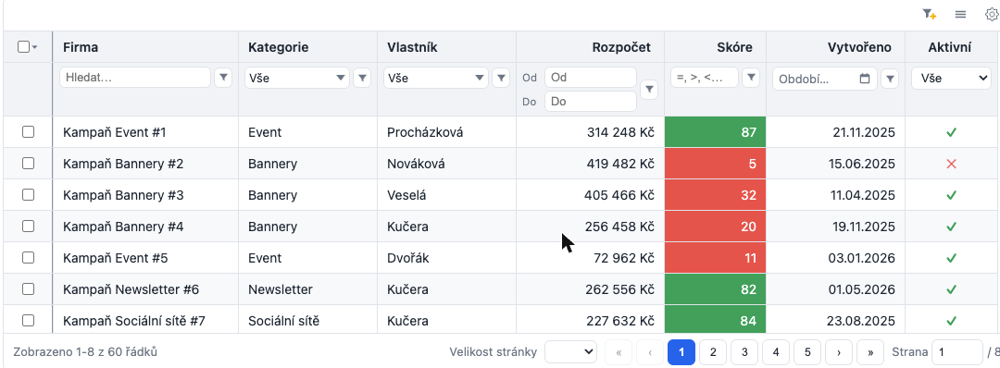
2Řazení sloupců
Klikni na záhlaví sloupce — data se seřadí vzestupně (▲). Další klik přepne na sestupně (▼), třetí klik řazení zruší.
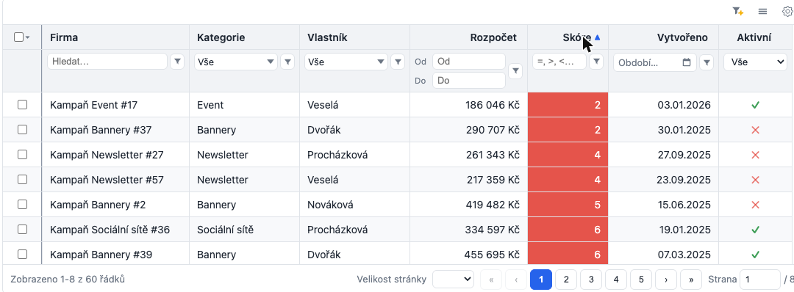
Vícenásobné řazení
Podrž Shift a klikni na další sloupec — přidá se jako druhé kritérium (u čísla se ukáže pořadí 1, 2, …). Tak seřadíš třeba nejdřív podle regionu a v rámci něj podle rozpočtu.
Výchozí řazení
Chceš, aby tabulka byla seřazená hned po otevření? Nastav si výchozí řazení v Nastavení tabulky (ozubené kolo ⚙) → záložka Sloupce a řádky → položka „Výchozí řazení". Z nabídky vybereš sloupec a směr (↑ vzestupně / ↓ sestupně), nebo „Bez řazení".
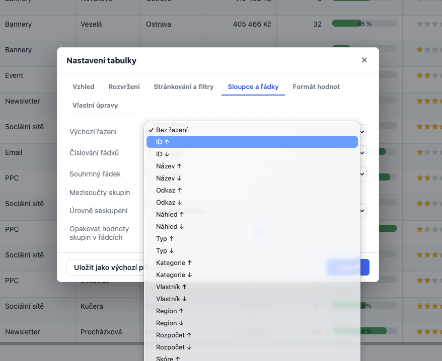
3Přesouvání sloupců
Přímo v tabulce
Klikni a drž levé tlačítko na názvu sloupce a táhni ho vlevo/vpravo. Během tažení se u cílového sloupce ukáže modrá svislá linka — přesně tam sloupec zapadne, když tlačítko pustíš.
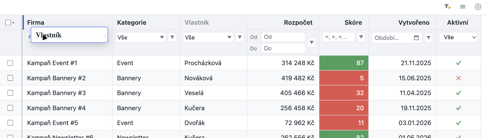
V dialogu „Sloupce"
Totéž jde i v dialogu „Sloupce" (ikona ⊟) — přetáhni řádek sloupce za úchyt ⋮⋮ nahoru/dolů. Modrá vodorovná linka ukazuje, mezi které sloupce se řádek vloží.
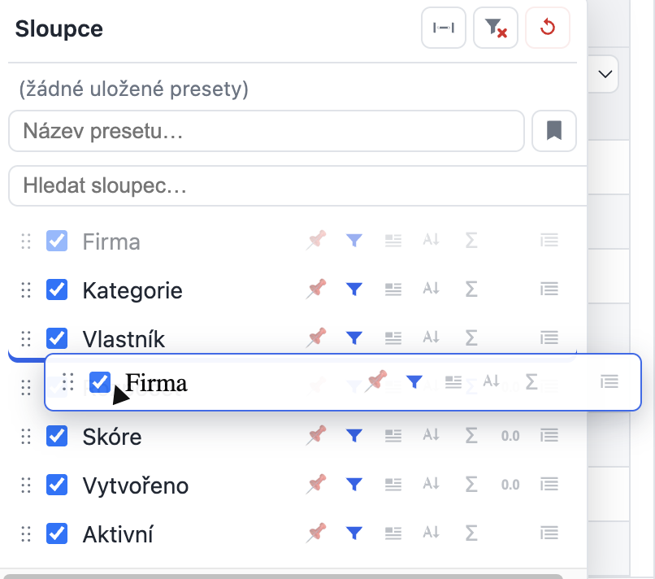
4Šířka a ukotvení sloupců
Šířka
Najeď na pravý okraj záhlaví — kurzor se změní na obousměrnou šipku. Tažením šířku měníš. Dvojklik na okraj přizpůsobí šířku jednoho sloupce obsahu.
Přizpůsobit šířku všem sloupcům naráz
V dialogu „Sloupce" (ikona ⊟) je nahoře tlačítko „Přizpůsobit šířku sloupců obsahu". Jedním klikem srovná šířku všech sloupců tak, aby se přesně vešel jejich obsah — úzké sloupce s oříznutým textem se roztáhnou, zbytečně široké se zúží.
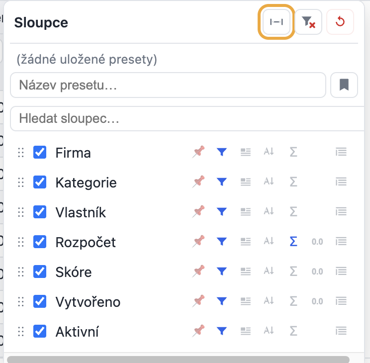
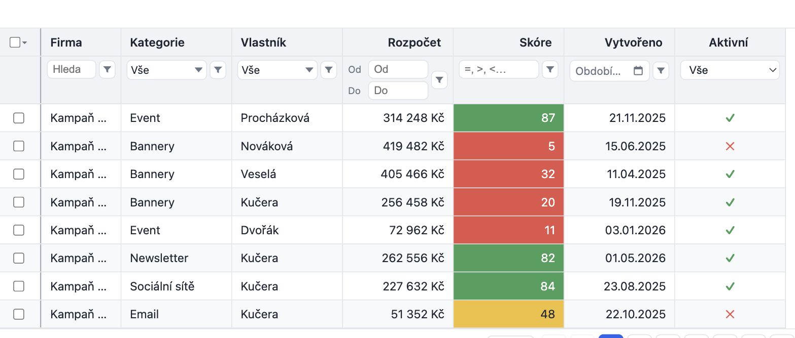
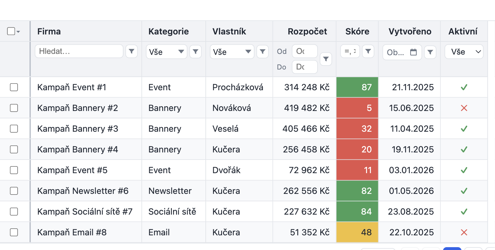
Ukotvení (frozen)
Sloupec můžeš přišpendlit vlevo nebo vpravo — pak zůstane na místě, i když tabulku horizontálně scrolluješ. Ukotvíš ho špendlíkem 📌 v dialogu „Sloupce" (viz sekce Dialog „Sloupce"). Užitečné pro identifikátor nebo název, ať ho vidíš pořád.
5Filtry a typy filtrů
Pod záhlavím je u každého sloupce pole filtru. Do textového začni psát a v tabulce zůstanou jen odpovídající řádky — ostatní se skryjí (tabulka se nezmenší, jen se proberou řádky). Vedle pole je ikona trychtýře — klikem na ni zvolíš typ filtru:
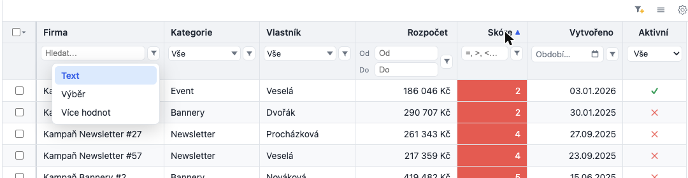
Text
Zobrazí řádky, které zadaný text obsahují (nezáleží na velikosti písmen). Prefixem
! filtr obrátíš na „neobsahuje" (viz sekce Negace a operátory).
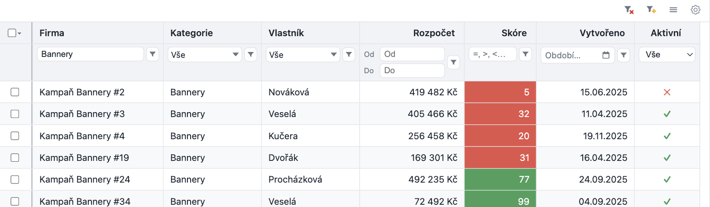
Výběr (jedna hodnota)
Místo psaní vybereš jednu hodnotu z rozbalovací nabídky (nabídka se sama poskládá z hodnot ve sloupci). Hodí se tam, kde je pár opakujících se hodnot — vlastník, stav, region…
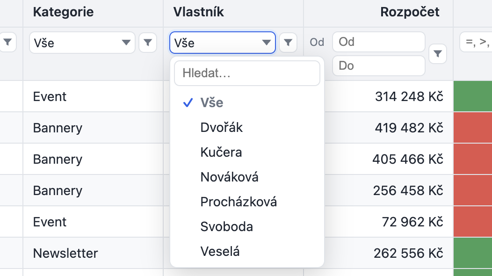
Více hodnot (multiselect)
Jako Výběr, ale zaškrtneš víc hodnot najednou — zobrazí se řádky, které odpovídají kterékoli z nich. Zvolené hodnoty se ukážou jako „štítky" přímo v poli filtru.
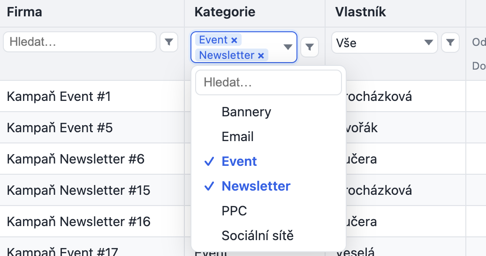
Číslo a Rozsah
U číselných sloupců máš dvě možnosti:
- Číslo — porovnání jednou hodnotou:
=5,>70,<10. - Rozsah — dvě pole Od–Do; zobrazí hodnoty mezi nimi.
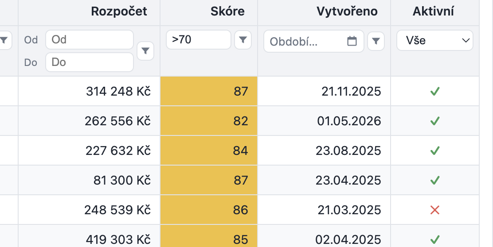
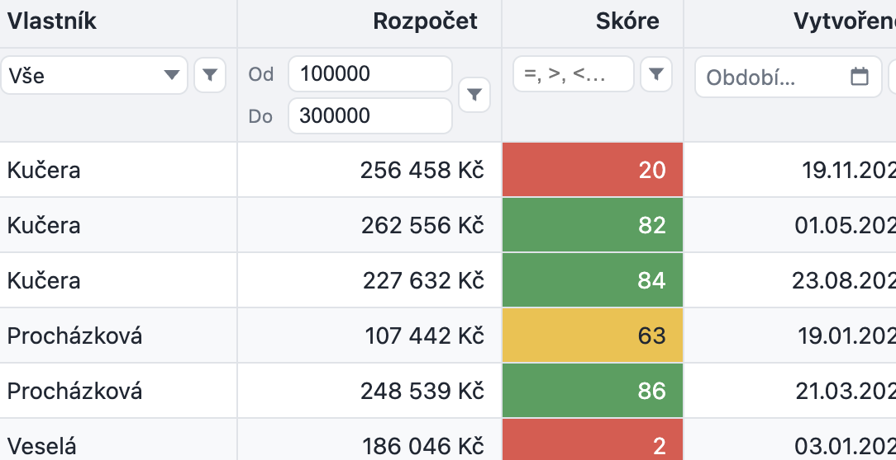
Datum: „rozsah" vs „Od / Do"
U dat jsou dva režimy a je mezi nimi důležitý rozdíl:
- Datum (rozsah) — jedno pole s kalendářem, kde vybereš celé období najednou (od–do). Vyžaduje obě hraniční data.
- Datum (Od / Do) — dvě samostatná pole; stačí vyplnit jen jedno (třeba jen „Od" = vše od daného data dál, nebo jen „Do" = vše do daného data).
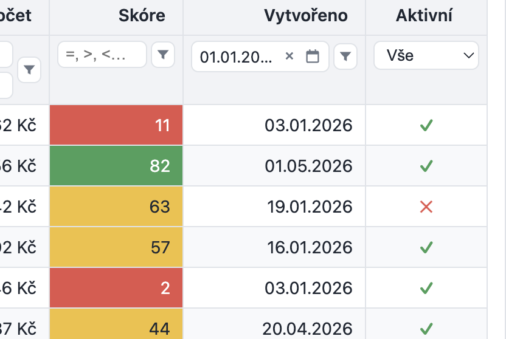
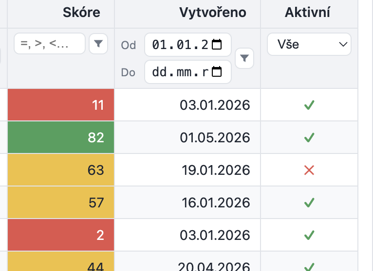
Kde jsou filtry (umístění)
Jestli jsou filtry v záhlaví sloupců (jako výše), nad tabulkou v samostatném panelu, jako jeden univerzální filtr, nebo vypnuté — to řídí Nastavení tabulky → Stránkování a filtry → „Umístění filtrů".
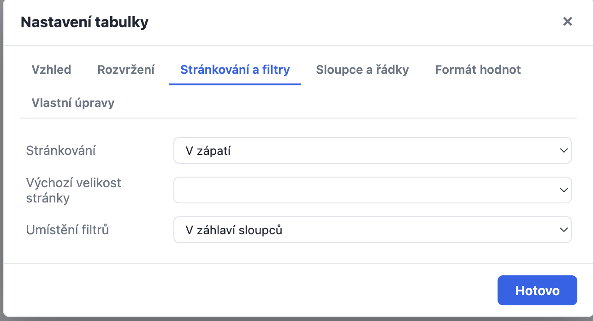
6Negace a operátory ve filtru
Textový filtr umí i opak: napiš na začátek vykřičník ! a filtr začne
znamenat „neobsahuje". Například !Bannery zobrazí vše kromě kampaní Bannery.
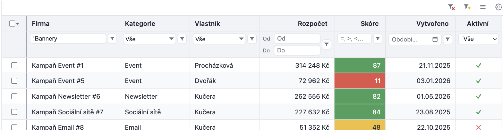
!Bannery ve sloupci Firma — zobrazí se vše, co „Bannery" neobsahuje. Vpravo nahoře přibyl trychtýř s křížkem (zrušit filtry).U číselných sloupců zadáš i porovnání: >70 (větší než 70),
<10, =5. U čísel a dat je navíc typ filtru Rozsah Od–Do
(přepneš ho trychtýřem u sloupce — viz předchozí sekce).
7Rozšířený filtr (A / NEBO)
Když jednoduché filtry v záhlaví nestačí, otevři Rozšířený filtr (ikona trychtýře s hvězdičkou/plusem v liště). Skládáš tu podmínky do logického stromu:
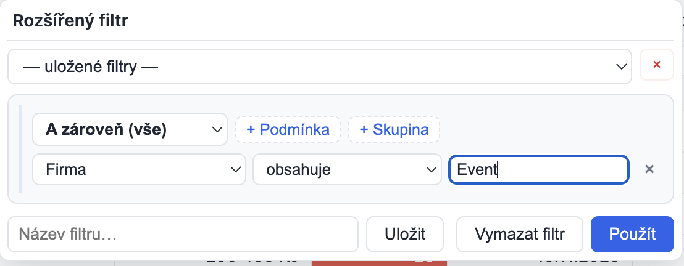
- Nahoře zvol A zároveň (vše) nebo NEBO (aspoň jedna).
- + Podmínka přidá pravidlo: vyber sloupec, operátor (obsahuje, =, >, …) a napiš hodnotu.
- + Skupina vloží vnořenou skupinu s vlastní logikou (třeba „A zároveň (X) a (Y NEBO Z)").
- Použít filtr aktivuje. Křížkem u řádku podmínku odebereš.
Složitější příklad
Řekněme, že chceš záznamy, kde je Kategorie „Email" nebo „Newsletter" a zároveň je Rozpočet buď pod 200 000, nebo nad 300 000. Potřebuješ tedy dvě skupiny „Nebo" spojené nadřazeným „A zároveň":
- Nahoře nech A zároveň (vše).
- + Skupina → uvnitř přepni na Nebo (aspoň jedno) a přidej dvě podmínky: Kategorie · rovná se · Email a Kategorie · rovná se · Newsletter.
- Znovu + Skupina → Nebo a dvě podmínky: Rozpočet · < menší než · 200000 a Rozpočet · > větší než · 300000.
- Použít. (Chceš-li si to schovat, dej dole Uložit pod názvem.)
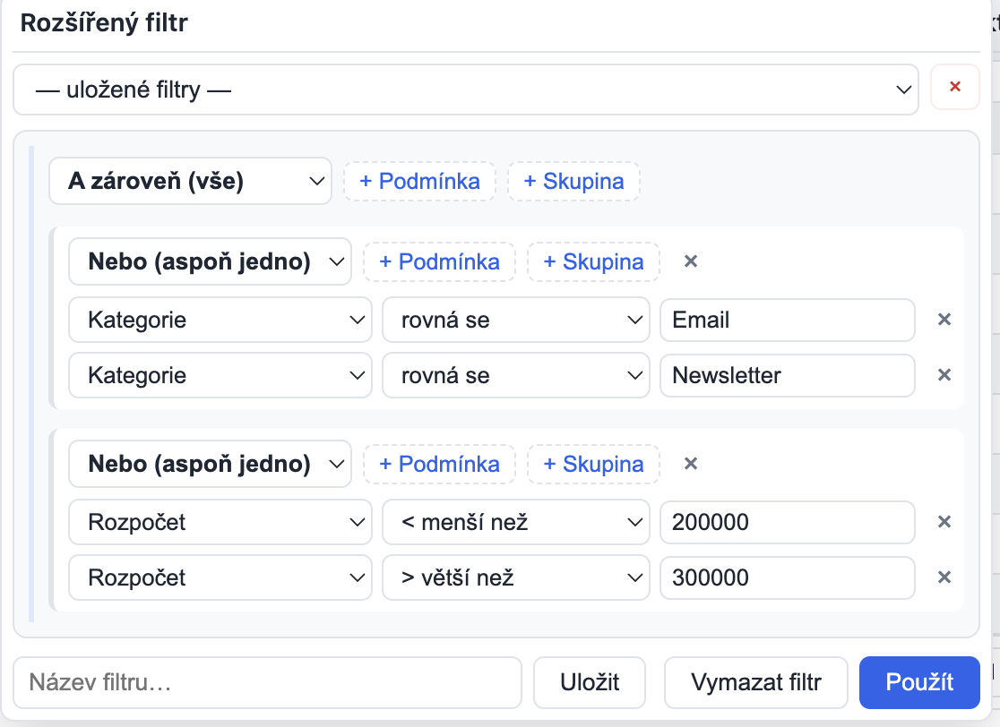
Uložení filtru
Napiš dole název a klikni Uložit — filtr se objeví v rozbalovací nabídce „uložené filtry" nahoře a příště ho použiješ jedním klikem. Vymazat filtr vše vynuluje.
Zapnout / vypnout filtr u sloupce
V dialogu „Sloupce" (ikona ⊟) ikonou trychtýře u řádku sloupce zapneš nebo vypneš jeho filtr. Když je modrá, sloupec filtr má; když ji vyklikneš (zešedne), filtrovací pole u toho sloupce zmizí. Hodí se, když u některých sloupců filtrovat nechceš.
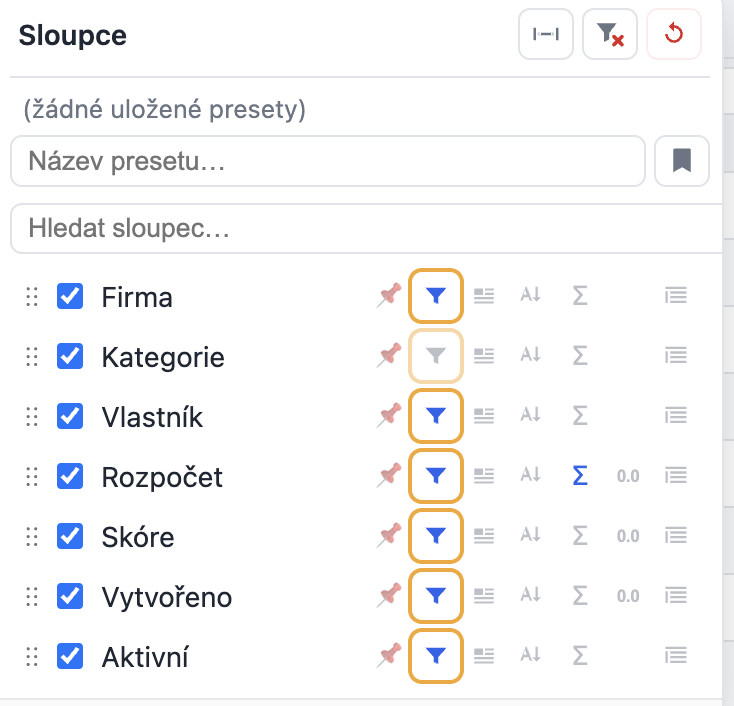
8Dialog „Sloupce"
Ikonou ⊟ vpravo nahoře otevřeš správu sloupců. Je to hlavní místo, odkud řídíš, co a jak se v tabulce zobrazuje: viditelnost, pořadí, ukotvení, filtry, souhrny, formát, seskupení i presety.
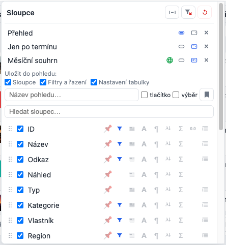
Ikony v hlavičce dialogu
-
Přizpůsobit šířku sloupců obsahu — srovná šířku všech sloupců podle obsahu (viz sekce Šířka a ukotvení).
-
Zrušit všechny filtry — smaže všechny aktivní filtry naráz.
-
Obnovit výchozí — vrátí sloupce (viditelnost, pořadí, šířky…) do výchozího stavu.
Presety (uložené pohledy)
Preset je pojmenované nastavení tabulky — sloupce, jejich pořadí a šířky, řazení, filtry. Do pole „Název presetu…" napiš jméno a klikni na ikonu záložky () — pohled se uloží. Uložené presety se pak nabízejí k výběru a jedním klikem si tabulku přepneš do uloženého stavu.
Globální preset: aplikace může mít i presety nastavené správcem (společné pro všechny). Poznáš je v nabídce a fungují stejně jako tvoje vlastní.
Hledat sloupec: když má tabulka hodně sloupců, do pole „Hledat sloupec…" napiš část názvu a seznam se zúží — rychle tak najdeš ten, který chceš zapnout/vypnout.
Co přesně se do presetu ukládá a k čemu je to praktické — viz sekce Presety.
Ikony u každého sloupce
U každého sloupce je vlevo úchyt ⋮⋮ (tažením změníš pořadí — viz Přesouvání sloupců) a zaškrtávátko (viditelnost). Dvojklikem na název sloupec přejmenuješ (Enter uloží, Esc zruší). Vpravo pak řada ikon:
- 📌
Ukotvit (vlevo/vpravo) — přišpendlí sloupec k okraji, ať zůstane vidět i při horizontálním scrollu (viz Ukotvení).
-
Zobrazit / skrýt filtr — zapne nebo vypne filtrovací pole u sloupce (viz Zapnout / vypnout filtr).
-
Skupina sloupce — spojí sousední sloupce pod společné nadřazené záhlaví (seskupení sloupců). V nabídce skupiny je i barva záhlaví skupiny (ikona A) a zrušení skupiny (×). Skupinu jde v záhlaví sbalit ikonou − (rozbalit +) — viz Skupiny a vzhled sloupců.
- A
Barva záhlaví sloupce — pozadí a písmo hlavičky. Picker má barevné kolo, jezdec jasu a přednastavené (Bootstrap) kombinace. Viz Skupiny a vzhled sloupců.
- ¶
Formát buňky — vzhled těla sloupce: zarovnání, tučné / kurzíva / podtržené / přeškrtnuté a barva písma i pozadí. Viz Skupiny a vzhled sloupců.
-
Otočení hlavičky — natočí text v záhlaví (vodorovně / svisle). Hodí se u úzkých sloupců s dlouhým názvem.
- Σ
Souhrn sloupce — zapne pod sloupcem (nebo vpravo za řádkem) výpočet. Nabídka se liší podle typu: u čísel Součet, Průměr, Min, Max, Počet; u textu jen Počet (viz obrázky níže). Souhrny se ukážou, až když v Nastavení tabulky zapneš souhrnný řádek (viz Souhrny a mezisoučty).
- 0.0
Formát sloupce — jen u čísel, měn a dat. Zvolíš Podle tabulky (globální), nebo Vlastní formát daného sloupce. Tady je i zapnutí barevné škály (semafor) — podmíněné formátování, podrobně v sekci Formáty a podmíněné formáty.
-
Seskupovat řádky — seskupí řádky podle hodnoty tohoto sloupce (seskupení řádků). U datumových sloupců nabídne úrovně (rok, kvartál…). Podrobně v sekci Seskupení. Seskupené sloupce se samy přesunou na začátek a ukotví vlevo.
Souhrn: nabídka podle typu sloupce
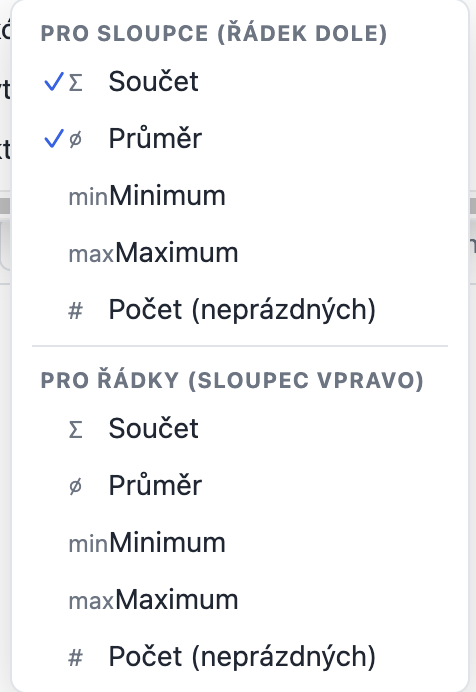
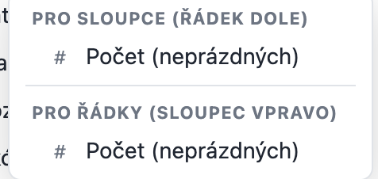
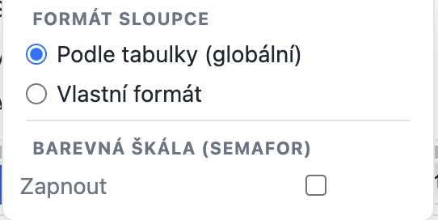
9Skupiny a vzhled sloupců
Sloupce můžeš sdružit do skupin, skupiny sbalit, a jak skupinám, tak jednotlivým sloupcům dát vlastní barvy záhlaví i formát buňky. Vše se nastaví v dialogu Sloupce a pamatuje se.
Skupiny sloupců
U sloupce klikni na ikonu Skupina a vyber existující skupinu, nebo napiš název nové (nová se nabízí jen u sloupce, který zatím skupinu nemá — sloupec může být jen v jedné). Sousední sloupce téže skupiny se spojí pod společné záhlaví. V nabídce skupiny je i barva (A) a zrušení skupiny (×) — bezpečně tady, ne přímo v gridu.
Sbalení skupiny
V záhlaví skupiny je ikona − (sbalit) / + (rozbalit). Sbalená skupina se schová do úzkého proužku jen se šířkou ikony — přehledné, když skupinu zrovna nepotřebuješ.
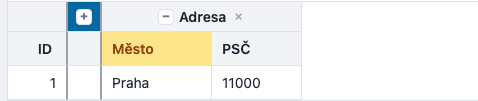
Barvy záhlaví
Ikona A u sloupce (a v nabídce skupiny) otevře picker barvy. Ve výchozím tabu je barevné kolo a jezdec jasu; druhý tab Palety nabízí přednastavené kombinace (à la Bootstrap) i vlastní volbu. Sloupec bez vlastní barvy zdědí barvu své skupiny; písmo se u presetů a kola dopočítá tak, aby bylo čitelné.
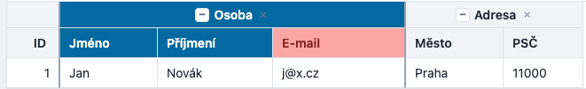
Formát buňky
Ikona ¶ u sloupce otevře Formát buňky — vzhled těla sloupce: zarovnání (vlevo / na střed / vpravo), tučné, kurzíva, podtržené, přeškrtnuté a barva písma i pozadí (stejný picker s kolem i paletami).
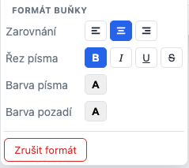
10Počítaný sloupec (vlastní vzorec)
Občas potřebuješ sloupec, který v datech není — třeba Celkem = cena × množství, marži, nebo celé jméno složené z více polí. Takový sloupec si vytvoříš přímo v tabulce zadáním vzorce — nemusíš nic programovat.
Jak na to
- Otevři dialog „Sloupce" (ikona ⊟ vpravo nahoře).
- Úplně dole klikni na „＋ Přidat počítaný sloupec".
- Vyplň Název a napiš Vzorec. Názvy polí do vzorce vkládáš klikáním na tlačítka pod ním (ID, Produkt, Cena…). Pod polem hned vidíš živý náhled výsledku na prvním řádku (nebo upozornění na chybu). Typ (číslo / text / datum) se sám nastaví podle výsledku vzorce — jen když chceš, změníš ho ručně.
- Klikni Uložit — sloupec se přidá do tabulky.
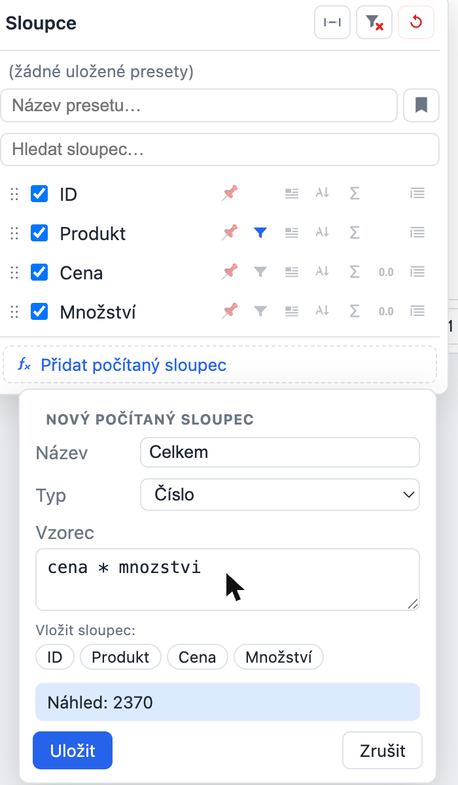
cena * mnozstvi — pole se vkládají klikáním, náhled ukazuje výsledek (2 370).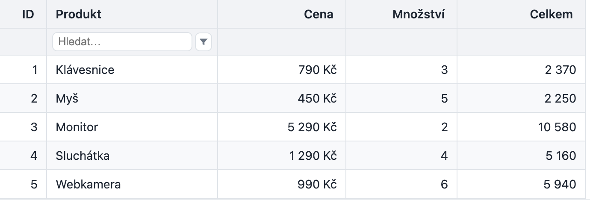
Co vzorec umí
- Počítat —
cena * mnozstvi,(a + b) / 2; operátory+ − * / %a závorky. - Spojovat text —
jmeno + ' ' + prijmeninebomesto + ', ' + psc. - Rozhodovat (když–pak) —
if(stav == 'hotovo', '✓', '—'); porovnání== != < <= > >=. - Datum —
days(start, konec)(počet dní),year(datum),age(narozeni)(věk). - Funkce —
round,min,max,upper,lower,len,coalescea další.
Nemusíš nic znát zpaměti — reference funkcí
V editoru je rozbalovací sekce „ƒ Funkce" se seznamem všech funkcí rozdělených do kategorií (Čísla, Text, Logika, Datum). U každé vidíš zápis (jaké má argumenty) i krátký popis. Nahoře je vyhledávání — napiš třeba „dat" a zůstanou jen datumové funkce. Kliknutím funkci rovnou vložíš do vzorce a kurzor skočí dovnitř závorek.
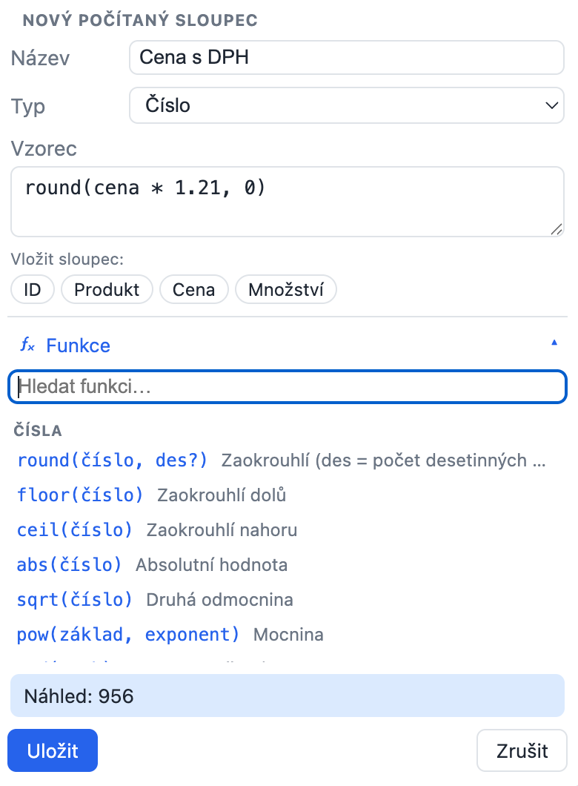
11Nastavení tabulky
Ozubené kolo ⚙ vpravo nahoře otevře Nastavení tabulky — vzhled a chování celé tabulky, rozdělené do záložek.
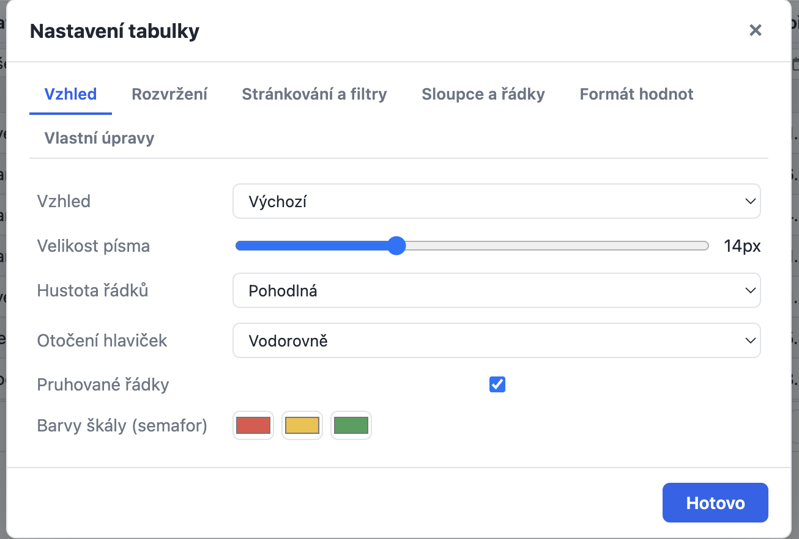
- Vzhled — motiv (světlý/tmavý/…), velikost písma, hustota řádků, barvy škály (semafor).
- Rozvržení — způsob šířky sloupců, zalamování textu, odkazy v nové kartě…
- Stránkování a filtry — umístění stránkování, velikost stránky, umístění filtrů.
- Sloupce a řádky — číslování řádků, souhrnný řádek, seskupení (úrovně, opakování hodnot), výběr.
- Formát hodnot — jak se zobrazují čísla, měny, data (viz sekce Formáty).
12Presety (uložené pohledy)
Preset je pojmenovaný pohled na tabulku. Nejdřív si tabulku naklikáš přesně tak, jak ji chceš — zvolíš viditelnost a pořadí sloupců, jejich šířky, nastavíš filtry a řazení — a celý tenhle stav uložíš pod názvem. Když pak preset použiješ, tabulka se do toho stavu jedním klikem celá vrátí.
Co se do presetu uloží
Preset si zapamatuje kompletní uspořádání sloupců i filtrování:
- Pořadí sloupců — v jakém pořadí jsou zleva doprava.
- Viditelnost sloupců — které jsou zapnuté a které skryté.
- Šířky sloupců a jejich ukotvení (vlevo/vpravo).
- Řazení — podle kterých sloupců a jak (i víceúrovňové).
- Filtry — všechny nastavené filtry včetně jejich hodnot (i to, u kterých sloupců je filtrovací pole zapnuté).
- Dále souhrnné funkce sloupce, formát, podmíněný formát (semafor), otočení hlavičky a skupiny sloupců.
K čemu je to praktické
- Výběr sloupců pro export — naklikáš si jen ty sloupce (a pořadí), které chceš vyvézt, uložíš jako preset a máš je kdykoli po ruce.
- Uložená kombinace filtrů — poskládáš si třeba „aktivní kampaně po termínu" a příště ji zapneš jedním klikem, aniž bys filtry klikal znovu.
- Režimy práce — přepínání mezi pohledy jako Přehled, Jen po termínu, Podle kategorie.
Jak preset vytvořit
Presety najdeš nahoře v dialogu „Sloupce" (ikona ⊟): do pole „Název presetu…" napiš jméno a klikni na ikonu záložky 🔖 — pohled se uloží. Uložené presety se pak nabízejí k výběru; jedním klikem si tabulku přepneš do uloženého stavu.
13Seskupení řádků (i podle data)
Řádky můžeš seskupit podle hodnoty sloupce — třeba všechny kampaně jedné kategorie pohromadě. Zapneš to v dialogu „Sloupce" (ikona ⊟): u sloupce klikni na ikonu Seskupovat řádky (seznam vpravo). Seskupovat lze i víceúrovňově (skupina ve skupině). Seskupený sloupec se sám přesune na začátek a ukotví vlevo.
Podle data — rok, kvartál, měsíc…
Tohle je klíčová vychytávka: datumový sloupec jde seskupit podle úrovní — rok, kvartál, měsíc, týden, den v týdnu, den v měsíci, hodina, minuta — a klidně víc naráz. U datumového sloupce otevře ikona seskupení checkbox nabídku, kde si zaškrtneš úrovně (např. Rok + Kvartál). Skupiny se seřadí chronologicky.
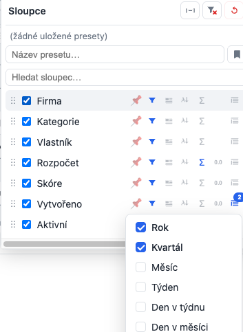
Dvě podoby zobrazení
Jak skupiny vypadají, přepneš v Nastavení tabulky → Sloupce a řádky → „Úrovně seskupení":
1) Vedoucí sloupce — úrovně jsou ukotvené sloupce vlevo (Rok, Kvartál, …), hodnota u každého řádku; při horizontálním scrollu zůstanou stát.
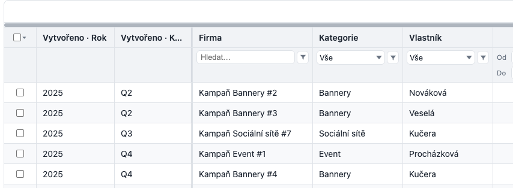
2) Vnořené hlavičky — skupiny jsou sbalitelné lišty (klik = sbalit/rozbalit). Vlevo je pořád ukotvený sloupec skupiny; jestli se v něm hodnota opakuje u každého řádku, nebo je jen v liště, řídí přepínač „Opakovat hodnoty skupin v řádcích".
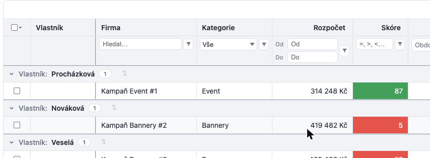
Řazení a rušení skupin
Skupiny seřadíš šipkou ⇅ v liště skupiny (přepíná vzestupně/sestupně). Řádky uvnitř skupin řadíš klikem na běžné hlavičky sloupců. Seskupení zrušíš stejnou ikonou seskupení v dialogu „Sloupce" (odškrtnutím).
14Inline editace
Pokud to aplikace povolí, hodnotu upravíš přímo v buňce — dvojklik (nebo Enter na vybrané buňce) ji přepne do editace. Napiš novou hodnotu a potvrď Enter; Esc úpravu zruší.
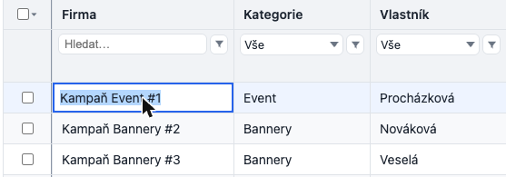
Podle typu sloupce se editor liší — u výběrových sloupců vyskočí nabídka, u data kalendář, u ano/ne přepínač. Když má sloupec pravidla (např. povinné, rozsah), neplatnou hodnotu nepřijme a upozorní na chybu.
15Výběr buněk a kopírování
Buňky můžeš označit jako v tabulkovém procesoru: klikni do buňky a táhni přes obdélník (nebo drž Shift a klikni na protilehlý roh). Označený rozsah se podbarví a dole se ukáže jeho souhrn.
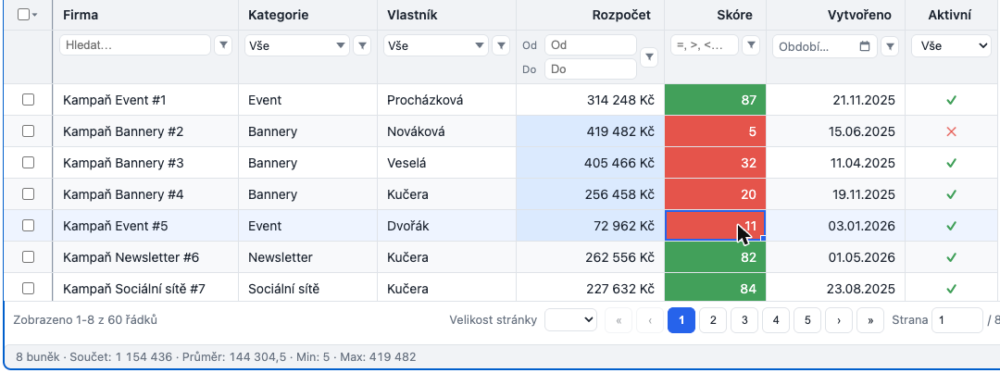
Označené buňky zkopíruješ do schránky přes Ctrl/⌘ + C a vložíš třeba do Excelu. Souhrn dole je praktický pro rychlou kontrolu (kolik to je celkem, průměr…).
16Klik na řádek, menu a popup
Klik na řádek
V mnoha aplikacích má kliknutí na řádek akci — třeba otevře detail záznamu. Jestli řádek reaguje, poznáš podle toho, že se při najetí zvýrazní a kurzor je „ručička". Co přesně klik udělá, závisí na aplikaci.
Kontextové menu (pravý klik)
Pravým tlačítkem na řádek/buňku může vyskočit kontextové menu s akcemi.
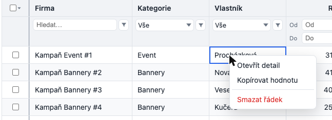
Popup nad buňkou
Některé buňky mají malý plovoucí panel — otevře se kliknutím do buňky nebo ikonkou ⓘ v záhlaví. Ukáže třeba detail, poznámku nebo doplňující akce, aniž bys opustil tabulku.
17Hromadné úpravy (výběr více řádků)
Vlevo je (pokud to aplikace zapne) sloupec s checkboxy. Zaškrtni řádky, které chceš zpracovat najednou — nahoře se objeví lišta hromadných akcí s tím, co lze s výběrem udělat.
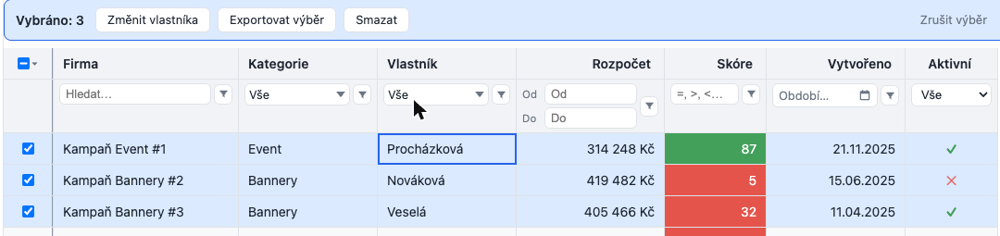
Checkboxem v záhlaví označíš/odznačíš celou stránku; jeho nabídka umí i „vybrat vše" napříč stránkami nebo výběr invertovat. Konkrétní akce určuje aplikace.
18Stromové zobrazení
Když jsou data hierarchická (např. organizační struktura, kategorie a podkategorie), tabulka je ukáže jako strom: v prvním sloupci je rozbalovací šipka a odsazení podle úrovně. Klik na šipku větev rozbalí/sbalí.
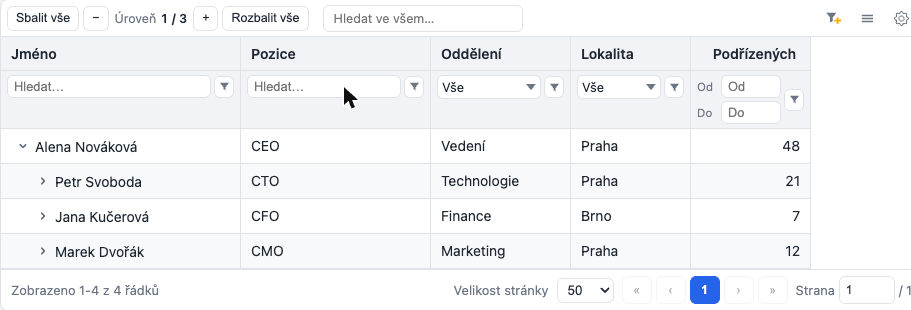
Nahoře jsou tlačítka Sbalit vše / Rozbalit vše a ovládání úrovně (rozbalit strom jen do určité hloubky). Filtry i hledání fungují i ve stromu — zachovají cestu k nálezu (rodiče) a větev se shodou se rozbalí.
19Přesouvání řádků
Pokud to aplikace zapne (a struktura dat to dovolí), můžeš měnit pořadí řádků myší. Vlevo v každém řádku je úchyt ⠿ — chytni ho a přetáhni řádek nad nebo pod jiný. Při tažení ukazuje modrá linka, kam řádek spadne. Nové pořadí si aplikace uloží.
1) Ploché řádky (změna pořadí)
Nejjednodušší případ: přetáhneš řádek nad/pod jiný a tím změníš jeho pozici v seznamu. Ostatní řádky se přečíslují.
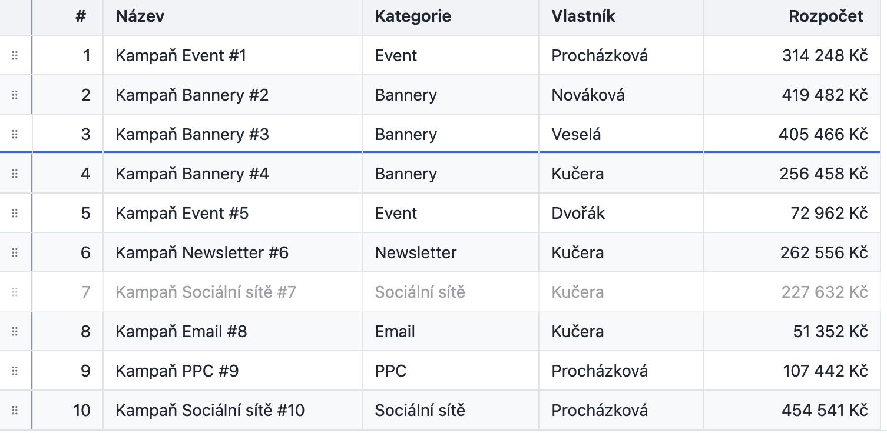
2) Přesun mezi skupinami
Když jsou řádky seskupené (viz Seskupení), přetažením řádku do jiné skupiny mu rovnou změníš hodnotu, podle které se seskupuje. Cíl označíš buď puštěním na hlavičku skupiny, nebo mezi její řádky.
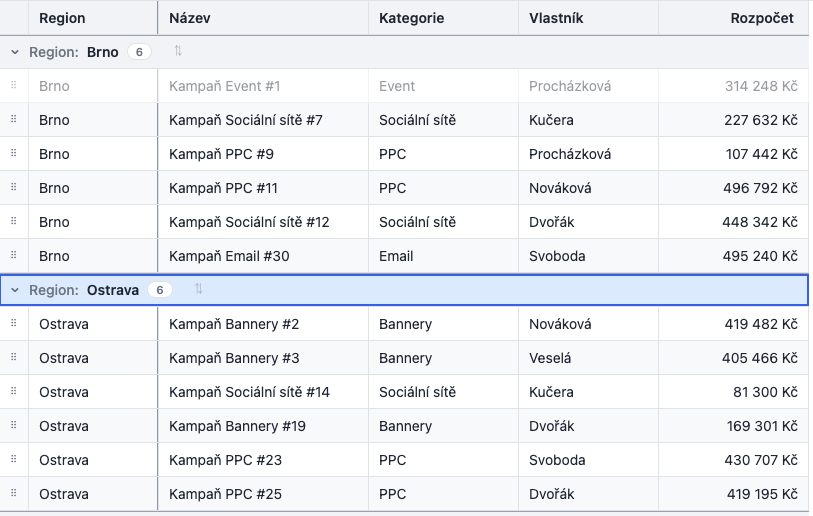
3) Strom — přesun uzlu i s podřízenými
Ve stromovém zobrazení vezme tažení uzlu celou jeho větev. Podle toho, kam ho pustíš, se stane jedno ze dvou:
- Nad / pod jiný řádek (u jeho horního/dolního okraje) — přeuspořádání mezi sourozenci.
- „Dovnitř" jiného řádku (na jeho střed) — uzel se přesune pod tento řádek jako jeho podřízený.
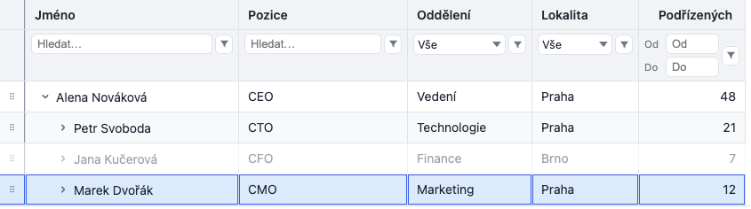
20Rozbalovací detail řádku
Některé řádky umí rozbalit panel s detailem pod sebou (tzv. master-detail). Poznáš je podle šipky ▸ na začátku řádku (obvykle ve sloupci ID). Klikem na šipku se pod řádkem otevře panel se souvisejícími údaji, které se nevejdou do sloupců; dalším klikem ho zavřeš.
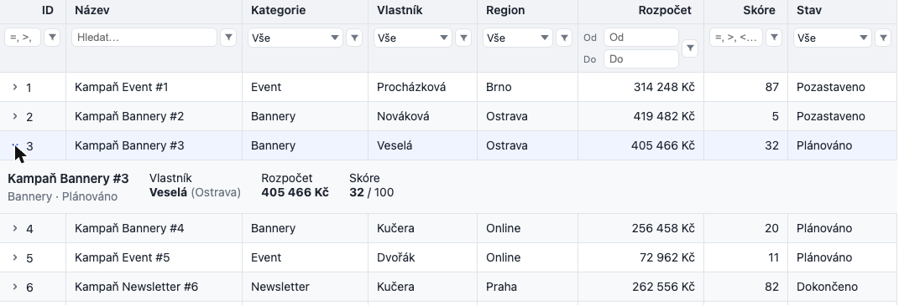
Stejný mechanismus se používá i u responzivního skládání sloupců: na úzké obrazovce se přetečené sloupce schovají právě do tohoto rozbalovacího detailu.
21Číslování řádků
Tabulka může vlevo zobrazit sloupec s pořadovým číslem řádku. Zapneš (a vypneš) ho v Nastavení tabulky → Sloupce a řádky → „Číslování řádků". Na výběr jsou tři možnosti:
- Vypnuté — žádný číselný sloupec.
- Průběžné (přes stránky) — čísluje napříč celou tabulkou: na druhé stránce pokračuje (9, 10, 11…). Ukazuje „kolikátý je řádek celkově".
- Od 1 na každé stránce — na každé stránce začne znovu od 1. Ukazuje „kolikátý je na této stránce".
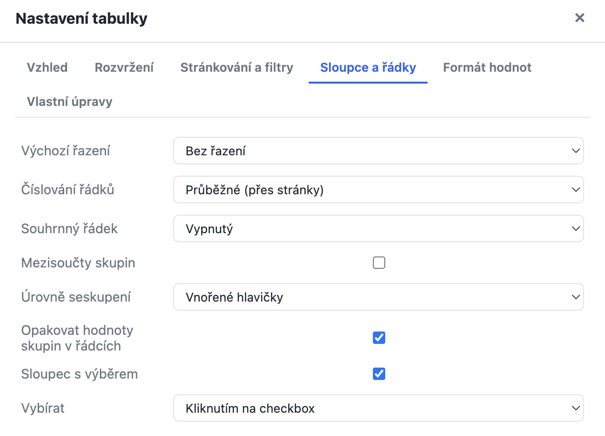
22Formáty a podmíněné formáty
Formát hodnot
Jak se zobrazují čísla, měny a data, nastavíš v Nastavení tabulky → Formát hodnot: desetinná místa, oddělovač tisíců, jak psát záporná čísla, symbol měny, jazyk formátu (locale).
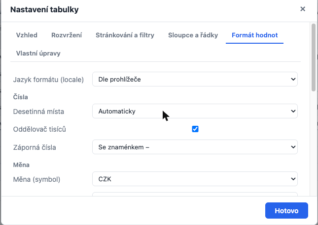
Podmíněný formát („semafor")
Buňky se mohou obarvit podle hodnoty — nízké hodnoty červeně, vysoké zeleně (jako semafor). To pomáhá na první pohled poznat extrémy. V ukázkách výše to vidíš na sloupci Skóre.
Kde se zapíná: u konkrétního sloupce v dialogu „Sloupce" ikonou Formát sloupce (0.0) — v části „Barevná škála" zvolíš semafor. Funguje jen u číselných sloupců (obarvení podle velikosti hodnoty).
Co lze nastavit:
- Počet stupňů — 3, 5 nebo 7 (např. 3 = červená–žlutá–zelená); podle toho se rozsah hodnot rozdělí na pásma.
- Prahy — hranice mezi pásmy se dopočítají automaticky z dat, ale můžeš je ručně přepsat (např. „červená pod 50, zelená nad 80").
- Barvy — sdílené „barvy škály" se berou z Nastavení tabulky → Vzhled → „Barvy škály (semafor)", takže obarvení je v celé tabulce konzistentní.
- Obrácení — když menší hodnota má být „lepší" (zelená), škálu otočíš.
23Souhrny a mezisoučty
Pod tabulkou může být souhrnný řádek — součet, průměr, minimum, maximum, počet za vybrané sloupce. Nejdřív ho ale musíš zapnout v Nastavení tabulky → Sloupce a řádky → Souhrnný řádek; které sloupce a jaké funkce se počítají, nastavíš ikonou Σ u sloupce v dialogu „Sloupce" (viz Dialog „Sloupce").
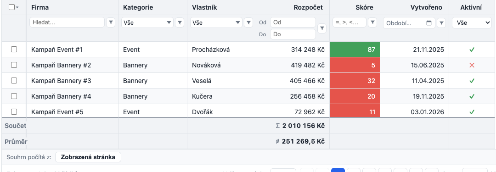
Přepínač „Souhrn počítá z"
U souhrnného řádku je přepínač, který mění, z kolika řádků se souhrn počítá:
- Zobrazená stránka — počítá jen z řádků právě viditelných na stránce (např. z 8 řádků aktuální stránky). Když přelistuješ na další stránku, čísla se přepočítají podle nových řádků. Hodí se, když chceš „kolik je na téhle stránce".
- Všechny záznamy — počítá přes celou tabulku bez ohledu na stránkování; při listování se souhrn nemění. Tohle je „celkový součet za vše".
Filtr platí vždy: ať zvolíš cokoli, souhrn počítá jen z vyfiltrovaných řádků — skryté (odfiltrované) záznamy se do něj nezapočítají. Rozdíl obou voleb je tedy jen v tom, zda se bere aktuální stránka, nebo všechny vyhovující řádky.
Když jsou řádky seskupené, můžeš mít i mezisoučty za každou skupinu (zapneš v Nastavení tabulky → „Mezisoučty skupin"). Rozsah a souhrnné funkce sloupce se nastavují v dialogu „Sloupce" (ikona Σ u sloupce).
Vážený souhrn vzorcem (poměry a průměry, které dávají smysl)
U poměrových sloupců (procenta, „na jeden prodej"…) je obyčejný průměr sloupce špatně — je to průměr procent, ne procento ze součtů. Příklad dovolatelnosti (spojeno ÷ vytočeno):
- Obchodník A: 50 spojeno / 100 vytočeno = 50 %
- Obchodník B: 9 spojeno / 10 vytočeno = 90 %
- Správně (ze součtů): (50+9) / (100+10) = 53,6 %
- Špatně (průměr procent): (50+90) / 2 = 70 % ← zavádějící
Proto lze souhrn sloupce spočítat vzorcem z agregací jiných sloupců. V dialogu
„Sloupce" u sloupce klikni na Σ a zvol „Vzorec (vážený souhrn)". Zadáš třeba
sum(spojeno) / sum(vytoceno) * 100 — funkce sum, avg,
count, min, max, median se vkládají
klikáním, s živým náhledem. Zvládne i vážený průměr:
sum(cena * obchody) / sum(obchody).
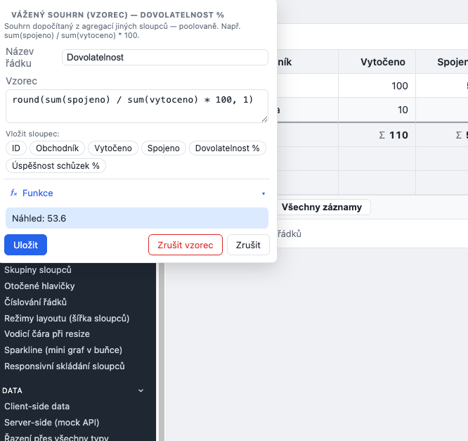
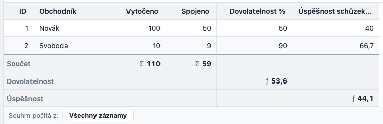
Každý pojmenovaný vzorec dostane vlastní řádek (sloupce se stejným názvem sdílejí jeden). Když ale vzorec pojmenuješ stejně jako standardní souhrn (např. Průměr), zobrazí se v jeho řádku — ikona ƒ u hodnoty naznačí, že jde o vážený výpočet. Vzorec ctí přepínač stránka / vše i mezisoučty skupin.
24Export a tisk
Data z tabulky lze vyexportovat — typicky do CSV (otevřeš v Excelu) nebo JSON, případně vytisknout. Export respektuje tvůj aktuální pohled: řazení, filtry i viditelné sloupce, takže dostaneš přesně to, co máš na obrazovce.
Kde export najdeš, závisí na aplikaci — bývá to tlačítko nebo položka v menu („Export", „Stáhnout CSV", „Tisk"). Rychlé kopírování menšího výběru zvládneš i přes označení buněk a Ctrl/⌘ + C (viz sekce Výběr buněk).